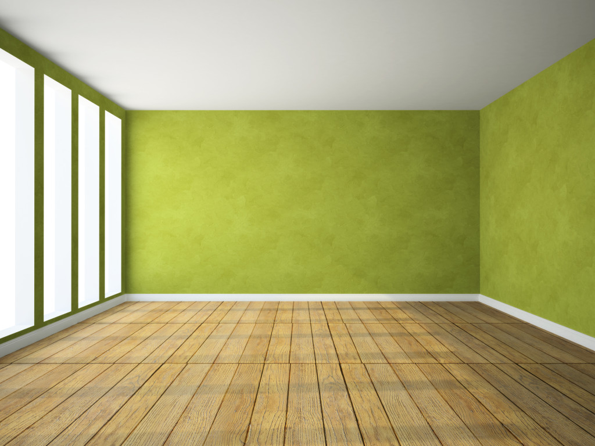
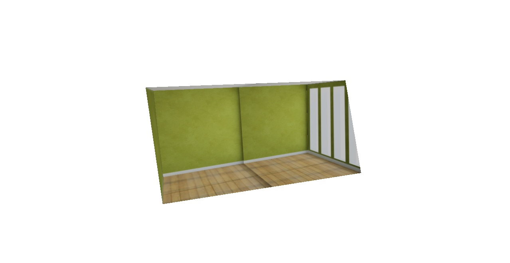
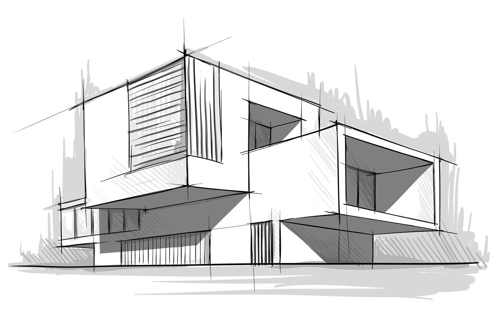
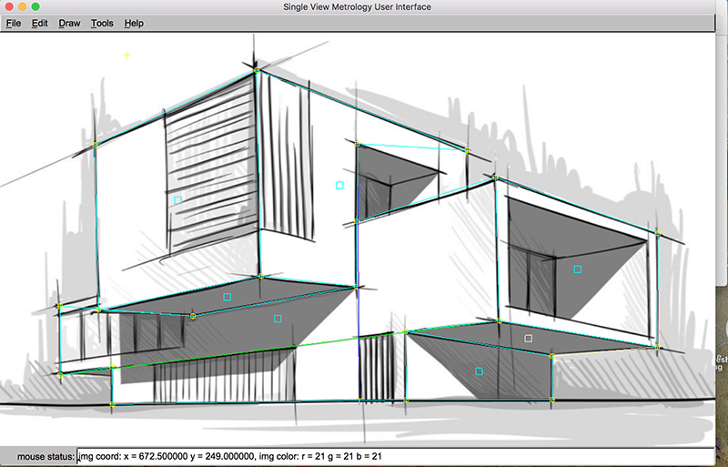
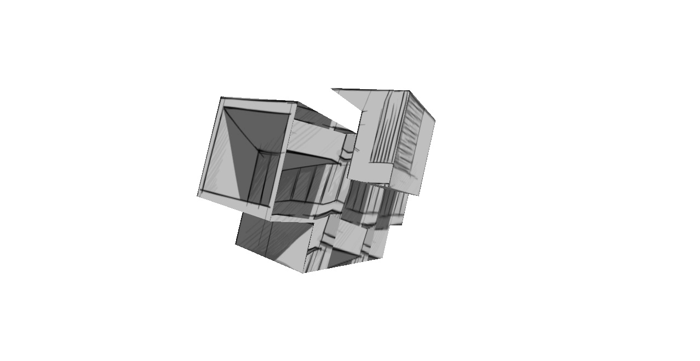

CSE 559A Project 4 Single View Modeling
Mengyan Li
Room:
Source image:
The picture is from the internet. It's a brand new room, I used this picture for testing.

Screenshots of the UI program


Vanishing pts: room
xvp=[-198783.578589 773.656736]
yvp=[513.679543 381.486597]
zvp=[950.576108 240745.167352]
homography:
H=[
3.059898e+02 4.456548e+14 2.153089e+02;
-1.070539e+00 1.204934e+14 2.506683e+02;
1.083330e-03 8.545634e+11 1.000000e+00;
]
Hinv=[
-2.509409e-03 -7.006204e-03 2.296532e+00;
3.593596e-17 8.186943e-15 -2.059945e-12;
-2.799104e-05 -6.988671e-03 1.000000e+00;
]

Sketch:
Source image:
It's from the internet. It's a modern style achitecture sketch.

UI Screenshot



The model:

Vanishing points:
xvp=[1737.857191 143.048880]
yvp=[-367.327805 132.394210]
zvp=[10159.929082 -617688.879432]
Homography:
H=[
5.859887e+02 1.441779e+16 4.446480e+02;
4.768513e+01 3.828048e+16 6.467428e+02;
3.364462e-01 7.155230e+13 1.000000e+00;
]
Hinv=[
-3.677016e-04 8.001041e-04 -3.539638e-01;
7.813917e-18 2.006900e-17 -1.645392e-14;
-4.353919e-04 -1.705175e-03 1.000000e+00;
]
How I make the final 3D models:
- Draw 3 lines for xline, yline, zline respectively.
- Calculate VPs
- Manually enter the values of the 4 lower points, and push them into the stack.
- Manually enter the value of 1 upper point and mark as height ref
- Compute Homography
- Manually assign coordinates to some of the polygons, and then use
Same Z Plane and Same XY Plane to calculate the rest, and adjust the
unappropiate points.
- Create polygons out of each side of the box and name them.
- Export as the wrl file type
- Convert .tga files to .gif
- Import the mesh (.wrl) file into Meshlab